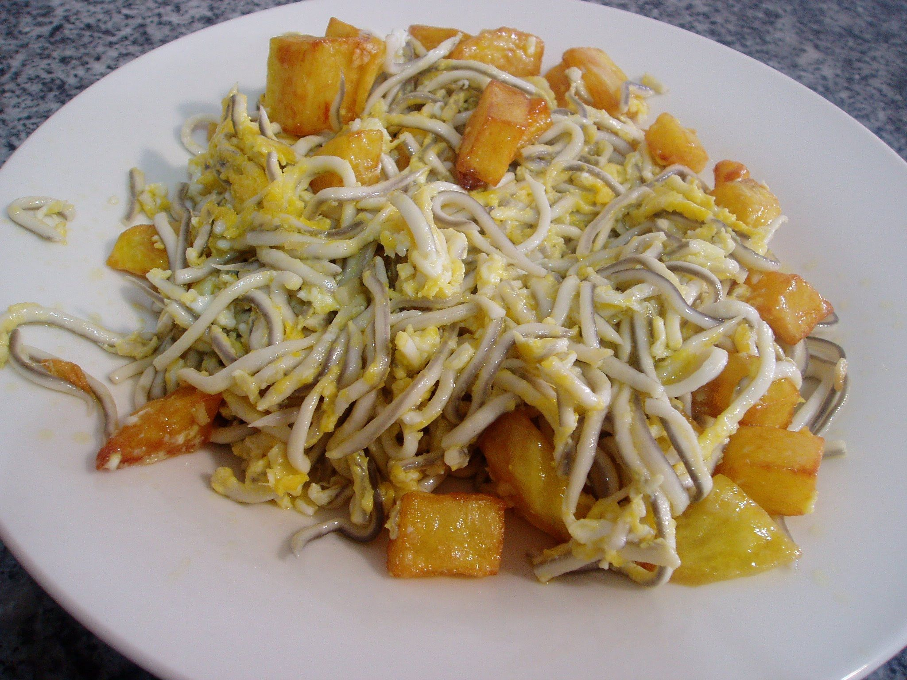

Revuelto de gulas a la Vasca

Ingredientes:
- 250 g de gulas
- 4 huevos
- 2 dientes de ajo
- 1 guindilla
- 1/2 cebolla
- 1/2 pimiento verde
- Sal
- Aceite de oliva
Tiempos:
- Preparación:20 minutos
- Cocina: 3 horas
- Total: 3:20 horas
Pasos:
- Pelar y picar los ajos y la cebolla.
- Cortar el pimiento en tiras finas.
- En una sartén, calentar un poco de aceite de oliva y añadir los ajos, la cebolla y la guindilla. Sofreír a fuego medio hasta que estén dorados.
- Añadir el pimiento y cocinar durante unos minutos hasta que esté tierno.
- Añadir las gulas y saltear durante unos minutos hasta que estén cocidas.
- Batir los huevos en un bol y añadir una pizca de sal.
- Añadir los huevos batidos a la sartén y cocinar a fuego medio-bajo, removiendo constantemente hasta que estén cuajados pero todavía jugosos.
- Servir caliente acompañado de una rebanada de pan tostado.